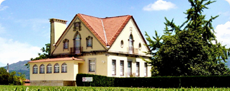
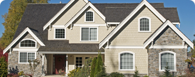
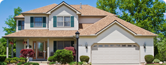
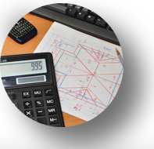

Построим дом Вашей мечты за 2 месяца в Ростове и области

Бесплатный подбор проекта дома и расчёт сметы проекта

2 года гарантии на фундамент и стены

Стоимость от 12 тыс руб / кв. метр

Сроки постройки от 2 месяцев
НАШИ УСЛУГИ:

ПОДБОР ЗЕМЕЛЬНОГО УЧАСТКА
Наши специалисты подберут для вас лучшие варианты земельных участков, подходящих для строительства уютного и комфортного дома.
Узнать подробнее...
ПРОЕКТИРОВАНИЕ ДОМОВ ЛЮБОЙ СЛОЖНОСТИ
Наш архитектурный отдел имеет большой опыт в проектировании домов и коттеджей различного уровня и класса. Мы поможем вам в выборе типового проекта и его привязке на конкретном участке, проведём корректировку типового проекта либо выполним индивидуальный проект вашего дома. Мы делаем проекты, которые способны удовлетворить самые изысканные вкусы.
Узнать подробнее...
СТРОИТЕЛЬСТВО ДОМОВ И КОТТЕДЖЕЙ
Мы осуществляем строительство коттеджей в Ростове согласно пожеланиям наших клиентов и в полном соответствии с требованиями снип'ов. Мы привлекаем только высококвалифицированных специалистов для работы над каждым проектом и используем только высококачественные и долговечные материалы.
Расчитать стоимость работ...
СТРОИТЕЛЬНЫЕ РАБОТЫ
Наши специалисты выполнят полный спектр строительных работ. Мы также предлагаем вам строительство пристроек, установку заборов, укладку тротуарной плитки, а так же ландшафтный дизайн и отделочные работы. Отлаженная организация труда на объекте позволяет нам выполнять работы с превосходным качеством и в оговоренные сроки.
Расчитать стоимость работ...
Выберите подходящий вариант строительства:
- 
Эконом
- Эскиз проекта
- Железобетонный ленточный фундамент
- Внутренние стены – автоклавный газоблок
- Фасад – декоративная штукатурка
- Деревянные перекрытия
- Кровля - профнастил
- Под чистовую отделку
Стоимость метра кв.
от 12 тыс. Руб/метр.кв. - 
Стандарт
- 3D визуализация проекта
- Железобетонный ленточный фундамент
- Внутренние стены – кирпич
- Фасад – облицовочный керамический кирпич
- Плитные перекрытия
- Кровля - металлочерепица
- Под чистовую отделку
Стоимость метра кв.
от 16 тыс. Руб/метр.кв. - 
Премиум
- Фотореалистичная визуализация проекта (при участии дизайнера-архитектора)
- Внутренные стены – кирпич, каркасные перегородки
- Комбинированный фасад
- Монолитно-бетонные перекрытия
- Кровля – гибкая черепица
- Под чистовую отделку
Стоимость метра кв.
от 23 тыс. Руб/метр.кв.
Всего 7 шагов и ваш дом готов:
- 1Вы оставляете заявку на предварительный расчёт стоимости дома
- 2Мы рассчитаем предварительную стоимость вашего дома в течение 3 часов после обращения к нам
- 3Мы подбираем проект дома и определяем желаемые материалы
- 4Утверждение проекта. Точный расчёт стоимости и сроков строительства, создание журнала работ
- 5Юридическое оформление сделки и подписание договора
- 6Поэтапное выполнение работ, соблюдая технологию строительства, согласно журнала работ
- 7Ваш Дом готов!
5 ключевых проблем с которыми сталкиваются 90% желающих построить дом:
- Приходится заниматься только стройкой, нужно самому бегать и искать подрядчиков на все сопутствующие работы
- Строители экономят на материалах, и пренебрегают технологией строительства
- Нет гарантий качества, дом разваливается через год-два
- Затягиваются сроки строительства
- Увеличивается стоимость дома по ходу стройки